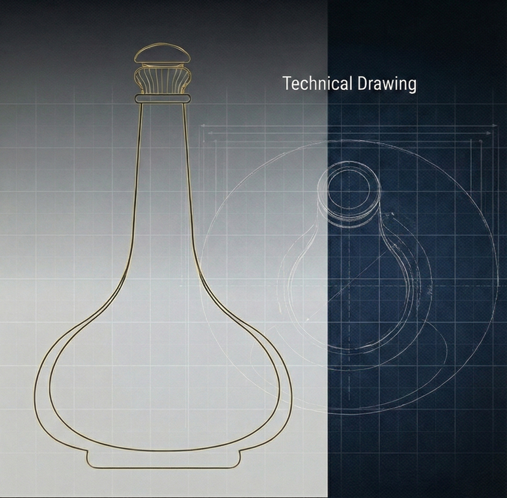
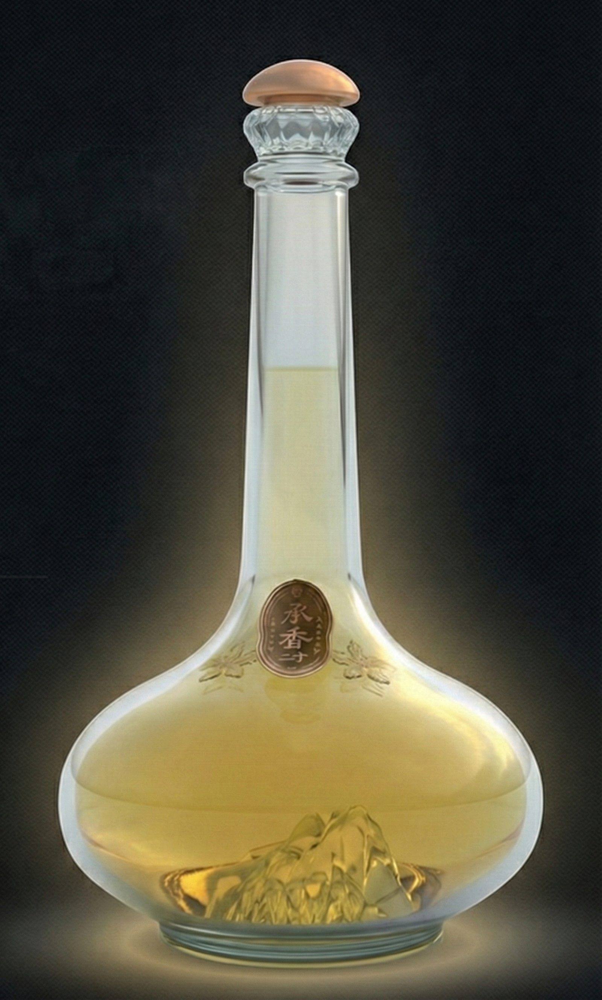
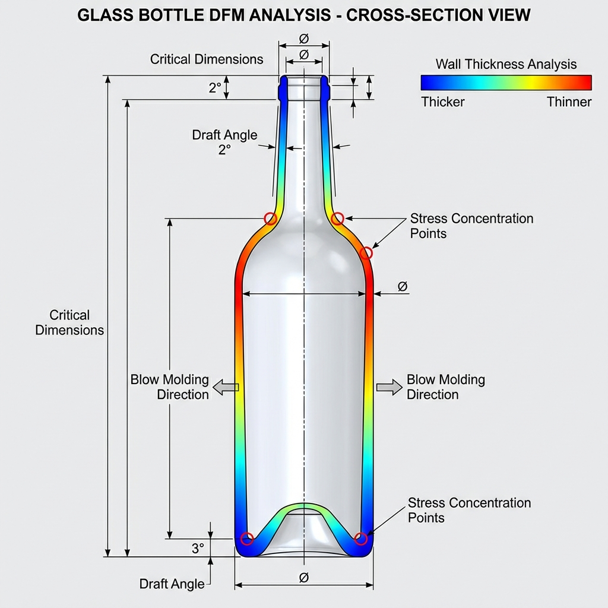
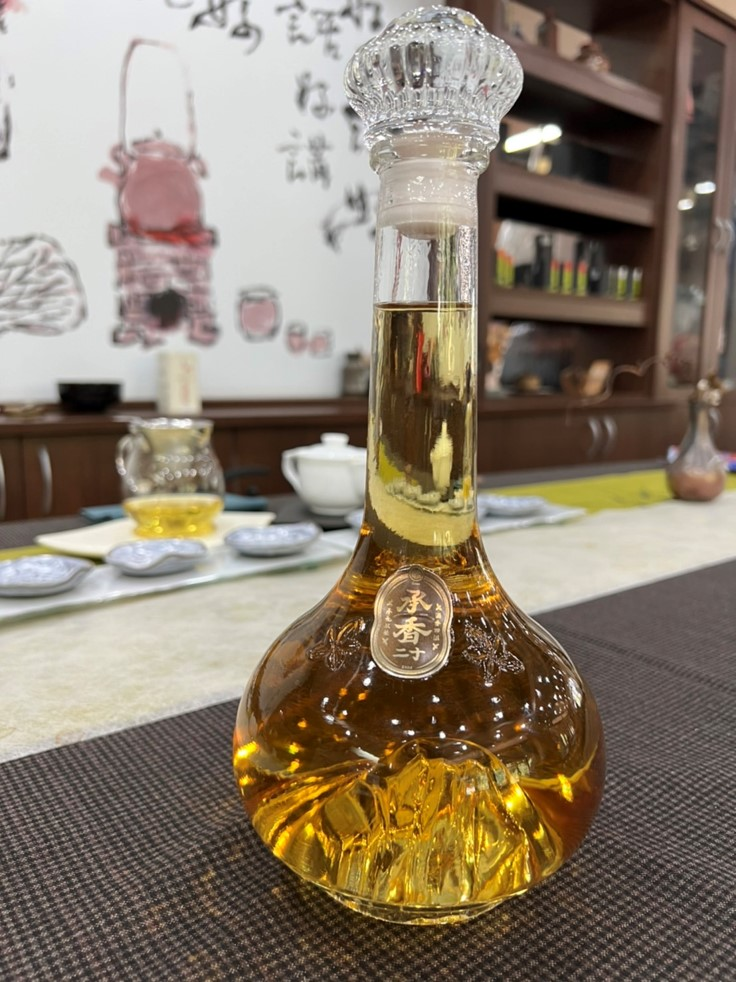

A bottle that didn't exist yet.
一支還不存在的酒瓶
The client came with sketches and a vision: a premium bottle with the silhouette of Yushan mountain at the base. No 3D files, no glassmaking experience. Neither did I — so we figured it out together.
客戶帶著草圖來，想要一支底部是玉山形狀的高端酒瓶。他們沒有 3D 檔，也沒有玻璃製作的經驗。我也沒有——所以我們就一起研究。
We dove into blow molding together: how glass moves in a mold, where walls thin out, what draft angles actually mean in practice. Then came the hard part — the brand logo embossing sat right where the blowing process wanted to distort it.
我們一起研究吹瓶工藝：玻璃在模具裡怎麼流動、壁厚在哪裡會變薄、拔模角度在實際生產上代表什麼。然後遇到了最難的部分——Logo 浮雕的位置，偏偏就是吹製過程最容易變形的地方。
We iterated with the factory — adjusting the emboss geometry, redistributing wall thickness, reworking draft angles — until we had a design that looked the way the client imagined and could actually be made at a production cost that made sense.
我們跟廠商來回調整——修改浮雕幾何、重新分配壁厚、調整拔模角度——直到做出一個既符合客戶想像、又能在合理成本下量產的設計。
#Complex Surface Modeling
#DFM
#Glass / Blow Molding

Concept Sketches
概念草圖
Technical drawing exploring form and proportion.
探索造型與比例的技術線稿。

3D Rendering
3D 渲染圖
Final rendering with integrated brand logo.
整合品牌 Logo 的最終渲染圖。

DFM Analysis
DFM 分析
Wall thickness distribution for blow molding.
吹製成型的壁厚分佈分析。

Final Product
最終產品
Production-ready glass bottle photography.
可量產玻璃瓶的產品攝影。
View Projects
瀏覽更多作品
Back to Portfolio
返回作品集
→
Got something similar in mind?
你也有類似的想法？
Take 2 minutes to map out your idea. I'll tell you if it's buildable.
花 2 分鐘釐清你的需求，我幫你看看能不能做。
Map My Idea
釐清我的想法